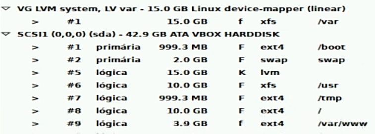
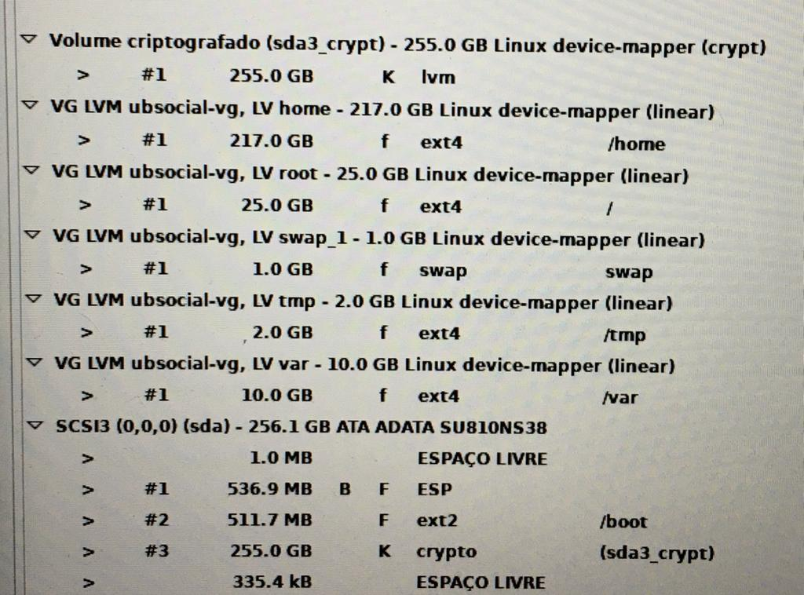

Criado em 1991 por Linus Torvalds, Linux não é um SO completo. É um kernel livre baseado em Unix (Ken Thompson e Dennis Ritchie), Minix, desenvolvido em C, considerado, inicialmente, um emulador de terminal para uso em Unix. Através de Richard Stallman, Linus conhece o projeto GNU, onde, futuramente, licencia o kernel Linux (GNU/Linux). Sua 1ª distribuição comercial foi a Yggdrasil Linux/GNU/X, lançada em 1992, no formato Live CD. O mascote do Linux é o pinguim Tux (Torvalds' Unix ou Tuxedo). Atualmente, 90% dos servidores web são Linux, correspondendo 99% dos supercomputadores no mundo. Linux está presente na maior parte de nossa rotina, como em dispositivos embarcados (smart TVs, Android, MacOS, video games, eletrodomésticos, multimídias automotivas, caixas eletrônicos), órgãos governamentais (forças armadas, departamentos governamentais), aplicações críticas (trens bala, CERN, sistemas de tráfego aéreo, reatores nucleares, foguetes de sondagem, artilharias de guerra), entre outros. Isso ocorre porque o Linux é Free (livre), onde não há restrição legal para manuseamento do código, permitindo, dessa forma, personalização profunda, de acordo com a necessidade. Além disso, o kernel possui enorme comunidade de contribuidores, ocasionando frequentes atualizações de integridade e otimização. Seu código fonte está disponível em kernel.org. Principais órgãos certificadores são LPI (Linux Professional Institute), Red Hat e The Linux Foundation. Esse resumo prepara você para concluir a certificação LPI Linux Essentials, a certificação básica do LPI. Tais certificações são reconhecidas mundialmente. Software livre (free software - Free as in freedom. "free" as in "free speech", not as in "free beer") possui código aberto (open source) e segue as diretrizes da GPL. Free refere-se ao conceito de liberdade, não ao preço de gratuidade (FOSS - Free and Open Source Software, FLOSS - Free/Libre and Open Source Software, sendo FLOSS a maneira mais correta, SL/CA - Software Livre e de Código Aberto). A criação da organização Creative Commons (CC), juntamente com suas licenças, disponibiliza maior diversificação de regras nos direitos autorais do mesmo, permitindo maior cooperação do projeto com a comunidade. Licenças baseadas em Creative Commons são as mais utilizadas na web.. Nem todo software open source (código aberto) é free software, nem mesmo gratuito. Customização, suporte, treinamento e serviços terceiros sob free software podem ser cobradas. Manifesto GNU (GNU not Unix) foi atrelado a FSF (Free Software Foundation), criados por Stallman para armazenar a GPL (GNU General Public License), que possui 4 liberdades:
Licenças como essas são Copyleft (contrárias a Copyright). A LGPL (GNU Lesser General Public License) foi escrita como meio-termo da GPL, permitindo associação com softwares que não estejam sob licenças GPL e LGPL, incluindo software proprietário. A AGPL (GNU Affero General Public License) cobre venda de acesso a software hospedado. A FDL (GNU Free Documentation License) estende princípios da liberdade à documentação do software. Licença permissiva (permissive), contrária à Copyleft, permite ao proprietário criar suas próprias cláusulas. Open Source Initiative (OSI) é organização dedicada a promover free software, a qual os principais projetos de free software estão vinculados.
Uma distribuição (distro) Linux é um SO com kernel Linux (GNU/Linux). Atualmente, há cerca de 600 distros, nem todas gratuitas. As distros base (from scratch) são Slackware, Debian, Red Hat Enterprise Linux (RHEL), Gentoo, SUSE e Arch. Com isso, criou-se uma árvore de distros geradas a partir de suas progenitoras (timeline distros Linux). Como exemplo, o Ubuntu é baseado no Debian, o Mint é baseado no Ubuntu. O Fedora e o CentOS são versões free do RHEL. O distrowatch possui todas notícias sobre distros Linux. A versão não modificada do kernel Linux é chamada de 'Vanilla'. A distro mais antiga em atividade é o Slackware.
Toda distro é CLI (command-line interface), onde há ausência de interface gráfica, sendo somente modo texto. Servidores geralmente utilizam somente CLI. Distros com adesão de GUI (graphical user interface) possuem interface gráfica, sendo essa renderizada através de desktop environment (DE). Desktop environment engloba a interface gráfica do gerenciador de janelas, além de seus respectivos softwares. Window manager (gerenciador de janelas) utiliza compositor de janelas, responsável por renderizar as janelas na GUI, por exemplo Compton e Openbox. Os DEs são diferentes no que diz respeito a uso de recursos de hardware no dispositivo, customização e aparência. Entre os principais DEs, tem-se:
Em muitas situações, pode-se optar por qual DE instalar na distro. Como, por exemplo, no Debian, optar entre Debian Gnome, Debian KDE, Debian XFCE, etc. Além disso, pode-se instalar um tipo de GUI, com DE não pertencente a mesma (exemplo GUI Gnome Shell em DE XFCE). XApps são apps GNU/Linux, com visual GTK, desenvolvidos pela equipe do Mint, com objetivo de fornecer experiência global e independente entre diferentes DEs, garantindo funcionamento em qualquer ambiente desktop GUI GNU/Linux. Distros com DEs como XFCE, LXQt, MATE e Fluxbox são ideais para hardware obsoleto. Distros com DEs como XFCE, KDE e Cinnamon possuem mais similaridade com Windows. Distros com DEs como Pantheon e Deepin DE possuem mais similaridade com MacOS. Linux Mesa/Mesa3D/The Mesa 3D Graphics Library é conjunto de hospedagem de implementações de APIs gráficas opensource (como a OpenGL), para comunicação com drivers gráficos do Kernel Linux, como Intel e NVidia AMD. Linux Proton é a camada de compatibilidade da Valve, para funcionamento de games nas distros. Sistemas GNU/Linux embarcados como Raspberry Pi OS (Raspbian) funcionam em hardware como placas Raspberry Pi. O PulseAudio é servidor de som que age como um intermediário entre aplicações de áudio o hardware de som, permitindo flexibilidade na gestão de fluxos de áudio. O JACK (JACK audio connection kit) é daemon de servidor de som profissional que fornece conexões em tempo real e baixa latência para dados de áudio e MIDI entre aplicativos que implementam sua API. O PipeWire é tecnologia que visa unificar e substituir PulseAudio e JACK, oferecendo um servidor de mídia multimodal na gestão de áudio e vídeo.
Dispositivos com função de prover determinados serviços, de forma segura e eficaz. Geralmente são classificados da seguinte maneira:
Existem diversas formas para utilizar distros Linux. Pode-se instalá-lo diretamente na máquina (bare metal), via pendrive bootável (live boot), unicamente ou ao lado de outro SO já presente no dispositivo (dual boot, multi boot). Primeiramente, precisa-se baixar o arquivo .iso da distro, para posteriormente formatar o pendrive com a .iso selecionada (pendrive bootável), através de algum software específico, como balenaEtcher. Após formatação concluída, o computador precisa ser reiniciado e sua BIOS acessada (F12), para selecionar opção de boot do pendrive. Os principais instaladores de distros Linux são Anaconda (Sabayon), DI (Debian-Installer), Drakx Installer (Mandriva/Mageia), Sysinstaller, Ubiquity (Ubuntu16), Calamares (Red Hat), YaST (SUSE), etc. Outro meio para utilizar distro Linux é através de VM (virtual machine) com o arquivo .iso da distro. Outra alternativa é através de containers. Via Windows, pode-se utilizar distro Linux via WSL (Windows Subsystem for Linux). Por fim, pode-se utilizar distro Linux online, via plataforma cloud, como Amazon, Azure, GCP, etc. Distros modo incógnito são live USB que são executadas na memória RAM do dispositivo, com processamento e armazenamento volátil, ou seja, removido após desligamento do dispositivo.
Objetivo do particionamento é separar, ao máximo, as finalidades dos diretórios com relação ao dispositivo de armazenamento, facilitando assim a manutenção, em caso de falhas/erros em uma partição, onde as demais permanecerão intactas.
Desktop:
Particionamento de disco com 500GB disponíveis para armazenamento e 4GB de RAM, para instalação de Ubuntu 20. Formatação do tipo GPT (GUID Partition Table) ou MBR (Master Boot Record), será da seguinte forma:
Servidor:
Particionamento 1:Particionamento de disco com 40GB, em modo antigo MBR BIOS (não EFI, onde criaria somente partições primárias).
Particionamento de disco com 238GB, em modo EFI, com utilização de criptografia. Preferível utilizar BTRFS ao invés de EXT4.
Toda distro Linux possui codecs (compatibilizadores de formatos de mídia), pode-se configurar snapshots via gerenciador de backups Timeshift, realizar tarefas agendadas de Cron/Crontab, UFW (Ubuntu firewall) e GUFW (Graphical), gestão de configurações Tweaks, entre outras funcionalidades. Há possibilidade de executar softwares incompatíveis com Linux via softwares interpretadores, como Wine (Wine is not emulator) e PlayOnLinux, através da implementação livre da API do Windows e engenharia reversa.
No Linux não existem programas, drivers e extensões: Tudo é considerado arquivo. Dispensando conceito de 'pasta', a estrutura de diretórios de arquivos no Linux possui padrão POSIX, baseada em FHS (File system Hierarchy Standard). Até mesmo os componentes de hardware são controlados por arquivos em realtime. Nos caminhos de diretórios, tem-se o caminho absoluto (originado a partir do diretório raíz até o diretório atual, exemplo: /home/ubsocial/arquivo. Comando 'pwd' mostra caminho absoluto - print world directory) e caminho relativo (originado a partir de diretório qualquer até o diretório atual (não originado no diretório '/'), exemplo ubsocial/arquivo).
Todo arquivo oculto inicia com ponto (.) antes do nome. Diretórios possuem barra (/) no final do nome (por convenção, geralmente possuem '.d' no final do nome, nos casos em que o diretório possuir arquivos de serviço específico). Diretórios com @ no final do nome são links simbólicos, ou seja, atalhos para o diretório real. Diretórios como /bin, /sbin, /etc, /lib devem estar na mesma partição que '/'.
File system tem objetivo de gerenciar os bytes de dados no dispositivo. Os inodes (index node - nó de índice - nó-i) são elementos de filesystem para armazenar metadados (dados sobre dados, como datas de modificações, diretório de localização, usuário proprietário, etc) de arquivos, através da tabela dos inodes. Comando 'ls -i' mostrará arquivos e inodes. No EXT4, os inodes são criados quando o file system é criado (na instalação da distro), onde há quantidade fixa de inodes no disco (limitada), conforme tamanho dos blocks do file system. Mesmo o disco possuindo mais espaço físico do que inodes, a partir do momento que todos inodes serem preenchidos, não haverá mais espaço para armazenamento. File systems como ZFS, NTFS e BTRFS realizam criação dinâmica de inodes, conforme criação de arquivos no sistema, evitando esgotamento de armazenamento. Quantidade de inodes e blocks é informada via comando 'tune2fs -l /dev/nomeParticaoOuDisco' ou 'df -i'. Função do comando 'ls' é exibir, de forma legível, informações dos inodes. Os inodes em conjunto são como "mapa" dos arquivos no disco, indicando suas posições na estrutura do file system. O superblock (superbloco) é block master, com informações críticas do file system, também usado para unir todos inodes no mesmo. GNU/Linux mantém cópia do superblock em cada file system. Conteúdo de superblock é visto via comando 'dumpe2fs /dev/dev/nomeParticaoOuDisco' ou 'dumpe2fs /dev/dev/nomeParticaoOuDisco | grep superblock'. Backups do superblock são encontrados nos arquivos com blocos de 1K no inode 8193, com blocos de 2K no 16384, e com blocos de 4K no 32768.
Linux possui 3 formatos de gerenciamento de dados: stdin 0 (standard input, entrada de dados, como via teclado), stdout 1 (standard output, saída de dados, como via display tela) e stderr 2 (standard error, feedback de erro, como via display tela ou arquivo de log). Pode-se alterar o padrão, como redirecionar stderr para arquivo ('ls erro 2> arquivo'). Redirecionar stdout e stderr para mesmo local com 'ls -l ubsocial 2&>1 arquivo'. Redirecionar stdout e stderr para locais diferentes com 'ls -l ubsocial > arquivo 2> arquivoErros'. O diretório '/dev' armazena arquivos dos dispositivos periféricos, com exceção de placas de rede, que são carregadas via módulo do kernel. Em '/dev' há '/devfs' ou '/udev'. '/dev' carrega todos os módulos ("drivers") do Linux, incluindo os não presentes no hardware host. '/devfs' (filesystem, DevFS) armazena informações de arquivos do dispositivo. '/udev' (userspace /dev - substituto do DevFS) carrega somente módulos encontrados no hardware host, além da configuração automatizada codeplug e hotplug. Seu arquivo de configurações é '/etc/udev/udev.conf' e seus arquivos de regras (rules) estão em '/etc/udev/rules.d/'. Os comando udevmonitor e udevadm monitor permitem modificar eventos armazenados no sistema lógico sysfs, onde ficam as identificações dos dispositivos. Lixeira no GNU/Linux encontra-se em diretório virtual para GUI 'trash:///', sendo o protocolo da lixeira ao desktop environment que é link simbólico para '/home/usuario/.local/share/Trash/', onde há os diretórios 'expunged/' (onde os arquivos apagados são enviados (lixeira da lixeira)), 'files/' (arquivos que estão na pasta lixeira) e 'info/' (informações e metadados dos arquivos na lixeira (diretório origem, data remoção, etc)) com arquivos 'nomeArquivo.trashinfo'. Protocolo da lixeira tem função de unificar diretórios '.Trash/' de todos dispositivos envolvidos, onde todos arquivos removidos serão exibidos na pasta 'lixeira/' da máquina. Diretório '.Trash-1000/' é diretório em dispositivos periféricos, onde ficam arquivos removidos nesse dispositivo. Ou seja, é a lixeira do periférico. Possui diretórios 'files/' e 'info/', com mesmo propósito informado acima. O 1000 significa UID do usuário logado e que apagou o arquivo (se root, então será '.Trash-0/', pois UID de root é 0. Nesse caso, somente root tem permissão de acessar). Comando 'trash nomeArquivo' envia arquivo para lixeira (se instalado o trash em CLI). Comando 'trash-empty' limpará lixeira CLI.
Arquivo '/etc/passwd' possui informações dos usuários, separadas por ':'. Constituem, respectivamente, login do usuário, senha ('x', determinando que a senha está em '/etc/shadow', ou '*', determinando que o login está desabilitado, ou linha em branco ou '!', determinando ausência de senha), UID (user identification), GID (group identification), GComs (dados de comentários do usuário, separados por vírgula), localização home do usuário e shell do usuário. Arquivo '/etc/shadow' possui informações das senhas dos usuários. Constituem, respectivamente, login do usuário, senha criptografada, data da modificação de senha (nº de dias), nº de dias para GNU/Linux permitir nova modificação de senha, nº de dias que o usuário pode manter mesma senha, nº de dias para expirar senha, nº de dias após expiração de senha, nº de dias até expiração de senha e campo reservado para futura informação. '/etc/login.defs' é o arquivo padrão lido quando novo usuário é cadastrado no sistema. '/etc/skel' é o arquivo que contém informações que são copiadas para dentro de /home/novoUsuario quando novo usuário é cadastrado. Todo usuário possui grupo relacionado. Nativamente, quando usuário é criado, também é criado grupo com mesmo nome. '/etc/group' contém os grupos cadastrados no sistema, constituindo nomeGrupo:senhaGrupo:GID:usuario1,usuario2 (senha 'x' indica que está em '/etc/gshadow', arquivo que contém informações das senhas dos grupos no sistema). Assim como usuários, há também grupo de sistema, geralmente usados para execução de processos (flag '--system' indica cadastro de usuário ou grupo de sistema). '/etc/sudoers' controla quem pode usar comando sudo e como (diretório '/etc/sudoers.d' possui arquivos que suplementam configurações ao sudoers).
Informações de usuários:
Username: Nome do usuário
Password Status: P(senha utilizável), L(senha bloqueada), NP(não há senha)
Change Date: Data de última modificação de senha
Minimum: Nº mínimo de dias que deve passar para permitir alteração de senha
Maximum: Nª de dias restantes para senha expirar
Warn: Nº de dias, antes da expiração de senha, para notificar usuário
Inactive: Nº de dias, após expiração de senha, que usuário permanece ativo
Comandos de usuários:
w: Ver detalhes de usuários conectados
whoami: Ver usuário atual (ou 'who')
quota: Informações do usuário na sessão
id nomeUsuario: Verificar se usuário encontra-se no sistema
getent passwd: Abrir passwd
Ver informações da senha de user: chage -l nomeUsuario
pwconv: Criar arquivo '/etc/shadow' a partir de '/etc/passwd' (pwunconv faz operação inversa)
sudo + comando: Comando em modo administrador
sudo su: Set user, alternar usuário, padrão (nome omitido) é root
sudo su -: Alternar para usuário root, alternando todas definições do ambiente para root
sudo su - nomeUsuario: Alternar usuário, alternando todas definições do ambiente para novo usuário
su - nomeUsuario: Sair do usuário root, para usuário comum
Alterar senha de usuário: passwd [parâmetros] [utilizador] (passwd -S sysadmin)
Alterar metadados de usuário: chage -W 5 nomeUsuario (alterar nº dias de avisos antes de expirar senha)(em '/etc/shadow')
Criar usuário: adduser nomeUsuario ('/etc/adduser.conf'. Ou useradd, '/etc/default/useradd', useradd não atribui shell ao usuário)
Criar usuário que não pode logar no shell: adduser --shell /usr/sbin/nologin --home /usr/share/novoUser novoUser (ou '/bin/false'. Para users que usarão apenas arquivos compartilhados ou executar processo)
Listar usuários: cat /etc/passwd
Deletar usuário: deluser nomeUsuario (ou userdel)
Grupos:
Adicionar grupo: groupadd nomeGrupo (ou 'addgourp nomeGrupo')
Adicionar grupo de sistema: groupadd --system nomeGrupo
Adicionar usuário em grupo: gpasswd -a nomeUsuario nomeGrupo
Adicionar usuário logado em grupo suplementar (temporariamente): newgrp nomeGrupo
Manipular informações de usuários e grupos: usermod e groupmod
Adicionar usuário em grupo: usermod -aG nomeGrupo nomeUsuario (-a é append)
Renomear grupo: groupmod -n novoNomeGrupo antigoNomeGrupo
Definir senha para grupo: gpasswd nomeGrupo
Deletar grupo: delgroup nomeGrupo (ou groupdel)
Listar grupos: groups (ou 'groups nomeUsuario' para grupos do usuário)
Exemplos:
useradd -s /bin/bash -m -c "UB Social, 10, 519999999, 5198989898," ubsocial
'-s' define shell
'-m' define home
'-c' define campos de comentários (gecos)
chage -W 5 nomeUsuario
'-m' nº mínimo de dias entre troca de senhas
'-M' nº máximo de dias entre troca de senhas
'-E' data expiração de senha
'-e' forçar expiração de senha (passwd -e nomeUsuario)
Exemplo, configuração de usuários em servidor:
- Cadastrar grupos:
addgroup empresa
addgroup tecnologia
addgroup rh
addgroup comercial
addgroup financeiro
- Adicionar grupo ao diretório: chgrp empresa dir1/ (Somente usuários do grupo 'empresa' poderão acessar diretório 'dir1/')
iface nomePlaca inet static
address 192.168.0.20/24
netmask 255.255.255.0
gateway 192.168.0.1
Ex: Incluir placa virtual de rede em '/etc/network/interfaces'
auto nomePlaca:0
iface nomePlaca:0 inet static
address 10.11..12.13
netmask 255.255.255.0
(Sair do arquivo, reiniciar service (sudo systemctl restart networking) e verificar com 'ip a')
search nomeHost.dominio
domain nomeHost.dominio
nameserver dnsPrimario
nameserver dnsSecundario
Entre os comandos de rede, tem-se route (route -n) para visualizar e manipular tabela de roteamento IP (inet) e gateway. O ifconfig e iwconfig para informações dos componentes de rede do dispositivo, ip a (ou 'ip address show'), ip r (ou 'ip route show' ver tabela de rotas) e nmcli são similares a ambos. ip addr show mostra IP do dispositivo. iwlist scan mostra todas redes sem fio. netstat ou ss mostra todas conexões de entrada e saída de rede, tabelas de roteamento e estatísticas do protocolo de rede. 'netstat -atunp' mostra com detalhes de PID, TCP e UDP. ping mostra tempo de envio/recebimento de resposta em rede (Ex: 'ping -c 4 192.168.1.2' (Ping para esse IPv4 limitado em 4 iterações). Ex2: 'ping uol.com.br' (Ping no site do uol)). host (host -opcao idHost, Ex: 'host www.google.com') localiza informações de rede como, por exemplo, IPv4 (opção -4) ou IPv6 (opção -6) de determinado host (comando dig informa com mais detalhes). As portas de rede encontram-se em '/etc/services'. Entre os firewalls Linux, tem-se iptables, juntamente com UFW (Ubuntu firewall), que possui o GUFW como serviço GUI para gerenciamento, além do firewalld. MacAddress é o id da placa física, geralmente identificado como link/ether, HWaddr ou HW, seguindo padrão 'xx:xx:xx:xx:xx:xx' (Ex: 5c:cd:5b:74:ae:32). O MacAddress da placa wifi do dispositivo geralmente encontra-se em wlan, identificado como 'HWaddr' ou 'ether'. Também pode ser encontrado com inxi -Nn na opção state 'up'. cURL (curl) oferece interface CLI para transferência de dados via protocolos de rede. wget é similar ao curl (Ex: 'wget http://ftp.gnu.org/pacote.tar.gz'). traceroute mostra rota via rede até o destino (Ex: 'traceroute www.google.com'). Comando ssh (secure shell) faz comunicação entre dispositivos via rede, com porta padrão 22. Por padrão no Debian, somente usuário comum pode conectar-se via SSH, para evitar telemetria. Passo a passo para acessar VM via SSH:
No caso acima, rede tipo NAT (Network address translation) é quando placa de rede da VM usa rede (IP) da máquina física para conexão. O tipo Bridge (Ponte) é quando VM conectada com cabo diretamente no modem, usando placa da máquina física somente como ponte para conexão.
SSH (secure shell):
ssh -p numPorta usernameRemoto@ipRemoto (-4 para somente IPv4, -6 para somente IPv6)
Conexão SSH: ssh -p 22 root@10.1.2.3 (porta 22(padrão), username 'root', ip '10.1.2.3')
Comando 'ss' (sockets services - alternativo ao netstat):
ss -atun | grep 22
-a: all
-t: tcp
-u: udp
-n: mostrar em formato numérico
LISTEN: SSH ouvindo na porta 22 (disponível)
Emulador de terminal é o programa que emula um terminal, no Linux representado pelo shell. Terminais virtuais (tty, teletypes) suportam o ambiente do sistema. Para acessar a tty utiliza-se 'ctrl+alt+FnumTty' (Ex: 'ctrl+alt+F2' acessará tty2), para alternar a tty utiliza-se 'alt+FnumTty'. Algumas tty's carregam GUI (geralmente tty1 e tty2), outras somente CLI (geralmente tty3 a 6). As tty's estão em '/dev/'.
Linux funciona sob sessão(ões) ativa(s). O login criará 1 sessão, composta por dados gerados do mesmo. Todo o log no sistema pertencerá a sessão ativa. Uma sessão possui usuário responsável, com seus respectivos arquivos, mensagens do sistema (logs), variáveis locais e histórico de comandos. Um mesmo usuário pode criar várias sessões ao mesmo tempo (cada shell executado e não fechado criará nova sessão, $SHLVL mostra o nível do shell). Toda vez que usuário comum executar 'sudo su', criará nova sessão com root, e poderá encerrá-la com 'exit', 'ctrl+d' ou 'logout' para retomar a sessão com usuário comum. Pode-se criar novas sessões via alternância de usuário, tty (com login) ou shell.
Camada de acesso básico ao Linux, utilizada para execução de binários e super binários. Para executar shell, basta informar seu nome ou diretório (ex: '/usr/bin/sh'). Comandos para encerrá-lo são os mesmos de sessão acima. Arquivo '/etc/bash.bashrc' possui informações dos shells interativos. Entre os tipos de shell, tem-se:
Espaços de memória que armazenam valores, com função de fornecer dados ao sistema. Comando echo faz chamada de conteúdo no shell em stdout (ex: 'echo "ola"' mostrará "ola" na tela). Para listar todas variáveis, tem-se 'set' (locais), 'env' (globais) e 'printenv'. Arquivo '/etc/sysctl.conf' realiza definições de variáveis de sistema para o kernel.
Exemplo:
nome="ubsocial"
echo $nome (toda vez que nome for chamada, representará seu valor: ubsocial)
unset nome (descarta variável)
echo $HOME (exibirá valor de HOME)
Apelido/atalho atrelado a determinada rotina. Comando 'alias' listará todos aliases do sistema.
Exemplo:
alias j="ls -l"
j (ao digitar 'j' será executado seu valor: Comando 'ls -l')
unalias j (descarta alias)
Para armazenar variável no Linux, precisa salvá-la no arquivo, caso contrário ela é removida da memória após finalizar sessão.
Camada de comunicação entre binários e kernel. As sintaxes do resumo possuem '<>' para termo que deve ser informado obrigatoriamente, e '[]' para termo que pode ser informado opcionalmente. Nessas sintaxes, todo termo fora de símbolos (parênteses, colchetes, chaves) deve ser informado obrigatoriamente. Comandos shell são case sensitive, onde caracteres maiúsculos diferenciam-se de minúsculos. Comando binário interpretado pelo shell possui composição:
Sintaxe 1: comando [-p] [argumento]
Sintaxe 2: comando [--parametro] [argumento]
ls
ls /home
ls -s /home
ls -s -a /home
ls -sa /home
ls --size /home
ls --size --all /home
Ver shell padrão: echo $SHELL (ou 'echo $0')
Data e hora do sistema: date
Fechar o bash: exit
Limpar bash: clear
Ajuda no bash: help
Comentário no Bash: #comentario (Comentários não afetam execuções no shell)
Concatenar comandos (; ou &&): ls ; echo "a" (ou ls && echo "a")
Histórico de comandos: history
Histórico dos 10 últimos comandos: history 10 (ou fc -l 10)
Histórico dos comandos 2 ao 6: fc -l 2 6
Histórico dos comandos na última hora: fc -l h
Executar 34º comando do histórico: !34
Ver informações de hardware: lshw
Ver informações sobre processador: lscpu (mesmo que '/proc/cpuinfo')
Ver informações da distro (necessário instalar): neofetch
Ver versão da distro: lsb_release -a (ou cat /etc/*-release)
Ver versão do kernel: uname -r
Ver detalhes do kernel: uname -a
Ver informações de memória cache em tempo real: sudo slabtop (ctrl+c para sair)
Ver informações de tempos em tempos: watch –n 5 date (mostrará date a cada 5seg)
Ver nome do dispositivo: hostname ('-i' mostrará ip)
Ver arquitetura do dispositivo: arch
Ver particionamento do disco: lsblk (dispositivos de bloco disponíveis)
Ver espaços das partições: df ('-h' para mostrar valores organizados, '-i' para mostrar inodes, buracos de memória no hardware de cada partição)
Ver informações sobre uso do disco: du (du -sh *)
Ver mensagens do sistema: sudo dmesg (mesmo que '/var/log/dmesg')
Ver quantidade de memória livre: free ('-m' para valores em Megabytes, '-h' para valores organizados. Comando analisa '/proc/meminfo')
Verificar e reparar sistema de arquivos: fsck (ou 'fsck nomeDisco'. Comando 'mkfs' é similar. 'mkswap' para disco swap)
Gerenciar partições do dispositivo: fdisk ('-l' listará, Ex: 'fdisk -l /dev/sda')
Ver módulos kernel carregados em memória: lsmod
Ver arquivos abertos: lsof
Ver dispositivos pci: lspci
Ver dispositivos scsi: lsscsi
Ver dispositivos usb: lsusb
Ver se comando é interno/externo: type comando ('type ls', comando interno é 'shell builtin')
Subshell (comando dentro de comando): ls $(which docker)
Gravar shell: script arquivoGravacao (Todos comandos/saídas no shell serão gravados no arquivoGravacao até ser informado 'exit' no shell)
Filme Star Wars ep4: telnet towel.blinkenlights.nl
Animação no shell: hollywood (Necessário instalação, 'sudo apt install hollywood')
Funcionalidades extras ao shell, como divisão em abas: tmux (Necessário instalação, 'sudo apt install tmux')
Ranger, file manager CLI: ranger (Necessário instalação)
Desligar: shutdown now (ou poweroff, ou init 0, ou shutdown 0)
Logout: logout
Reiniciar: reboot (ou shutdown -r, ou init 6)
Criar diretório (make directory): mkdir diretorio1 diretorio2 diretorio3
Criar diretório com subdiretório: mkdir -p diretorio1/diretorio2/diretorio\ 3/ ('\' não interpreta próximo caractere como comando ("diretorio 3"). '-p' não sobrescreve, caso diretório já exista)
Criar arquivo: touch nomearquivo (ou 'touch arquivo\ de\ teste' para criar "arquivo de teste")
Remover arquivo: rm arquivo
Remover diretório vazio: rmdir diretorio
Remover diretório não vazio (recursive): rm -r diretorio (-f para remoção forçada)
Remover sob confirmação (interactive): rm -i arquivo
Listar conteúdo do diretório atual: ls
Listar conteúdo em diretório específico: ls nomeDiretorio
Listar diretório e subdiretórios: ls -R (recursivamente)
Listagem com detalhes: ls -l
Listagem com informações aprimoradas de armazenamento: ls -l -h
Listagem incluindo arquivos ocultos: ls -a
Listar diretório e subdiretórios, recursivamente: ls -lR
Listagem com informações de armazenamento, arquivos ocultos e subdiretórios: ls -Rlah
Ver diretórios árvore FHS: tree ('tree -L 1 /' nível 1, somente 1 diretório. 2 para diretório e subdiretórios)
Ver metadados de arquivo (via inodes): stat nomeArquivo
Ver formato de arquivo: file nomeArquivo
Ver conteúdo de arquivo: cat nomeArquivo ('tac' mostra inversamente)
Ver contagens de arquivo: wc nomeArquivo (nº de linhas, palavra e bytes, respectivamente)
Ver início de conteúdo de arquivo: head nomeArquivo ('tail' mostra o final)
Ver conteúdo de arquivo, com paginação: less /etc/services ou 'ls | more' (Less: 'n' pula pra próxima página, '/termo' procura por termo específico, 'more' é o inverso de less)
Inserir conteúdo de arquivo em outro arquivo: cat arquivo > arquivoGravacao
Inserir conteúdo de arquivo no final de outro arquivo: cat arquivo >> arquivoGravacao
Conteúdo do 'ls -l' (long listing format):
[tipoArquivo] [permissões(proprietário/grupo/outros)] [contagem linksFisicos] [proprietárioDoUsuario] [proprietárioDoGrupo] [tamanhoArquivoBouKB] [dthrRegistro] [nomeArquivo.extensao]
Exemplo (arquivo): -rw-r--r-- 1 root root 18047 Dec 20 2021 alternatives.log
Exemplo (diretório): drwxr-x--- 2 root adm 4096 Dec 20 2021 apache2
d: Diretório
-: Arquivo regular (Indica que é arquivo, não sendo diretório)
l: Link simbólico (Aponta para outro arquivo, 'soft link'. Links físicos, não simbólicos, são entrada adicional no sistema de arquivos que aponta para mesmo local (inode) do disco. Comando 'ls -i' mostra inodes)
s: Arquivo é um socket (Comunicação entre processos)
p: Arquivo é um fifo, named pipe (Comunicação entre processos. Fifo- FistIn FirstOut, muito usado para filas de elementos em lista de espera)
b: Arquivo é dispositivo de bloco (Comunicação com hardware, com buffer: região temporária de memória para escrita/leitura)
c: Arquivo é dispositivo de caractere (Comunicação com hardware, sem buffer)
u: O mesmo que c
Impressão simples (line printer): lp arquivo.txt
Impressão avançada: lp -d nomeOuIdImpressora -n 2 -P 1,3 Documents/arquivo (2 cópias, páginas 1 e 3)
Detalhes da impressora: lpstat -p -d
Ver fila de impressão: lpq
Entrar em outro diretório: cd nomeDiretorio (Exemplo: 'cd /home/usuario/Documents')
Voltar 1 diretório (diretório pai): cd ..
Voltar 2 diretórios: cd ../../ (e assim por diante)
Entrar no diretório do usuário: cd (ou cd ~)
Entrar no diretório root: cd /
Criar links: ln -s arqOrigem /home/arqLinkSimbolico (ou somente 'ln' para criar link físico - hard link)
Listar links simbólicos: ln -lh
Copiar e colar arquivo: cp arquivo diretorioDestino
Copiar e colar recursivamente: cp -r dirOrigem dirDestino (-p mantém metadados, 'preserve')
Copiar e colar, renomeando: cp arquivo dirDestino/novoNomeArquivo
Mover: mv arquivo diretorioDestino (o mesmo vale para diretórios)
Renomear: mv arquivoAtual arquivoNovo (o mesmo vale para diretórios)
Comparar arquivos: diff arquivo1 arquivo2 ('-r' recursivo, '-i' ignora CamelCase, '-a' compara qualquer tipo de arquivo. 'cmp' é comando similar)
Sincronizar arquivos: rsync arqOriginal arqDuplicado ('-r' recursivo, '-v' verbose, '-a' mantém todos metadados)
Copiar e colar (bit a bit): dd if=/dev/arquivo1 of=/tmp/arquivo2 bs=1M count=50
if: arquivo de entrada, a ser lido
of: arquivo de saída, a ser gravado
bs: tamanho do bloco (Kilobyte, Megabyte, Gigabyte, Terabyte, etc.)
count: contagem de blocos a serem lidos da entrada
Também conhecidos por globbing (file globbing), são caracteres regex utilizados em conjunto.
Metacaracteres (representação):
. Qualquer caractere único
* Conjunto de caracteres
? Apenas 1 caractere
[ ] Intervalo de caracteres
[a-z][0-9] Caracteres de 'a' até 'z', caracteres de '0' até '9'
[a,z][0,9] Caracteres 'a' e 'z', caracteres '0' e '9'
[a-z,1,0] Caracteres de 'a' até 'z' ou '1' ou '0'
[^ ] Faixa de caracteres ausentes
{ } Padrões de caracteres
x{ab,01} Caracteres 'xab' ou 'x01'
x{a-c,f} Caracteres 'xa', 'xb', 'xc' ou 'xf'
^ Se o 1º caractere do padrão, o padrão deve estar no início da linha
$ Se o último caractere do padrão, o padrão deve estar no final da linha
+ 1 ou mais do padrão anterior
| Alternativa ao - um 'ou' lógico
( ) Agrupamento
! Excluir caractere da operação
\b Borda de uma palavra
\n Recuperar n agrupamento (n é um nº)
\ Acessar caracteres especiais e metacaracteres (também considerado caractere de escape)
Classificação:
Marcação (âncoras): ^ $ \b
Quantificadores: . ? * + {n[,m]} [...] [^...]
Agrupamento: () \n
Outros: \
Exemplos:
Criar arquivos: touch arq{1-3}.txt (gerará 'arq1.txt', 'arq2.txt' e 'arq3.txt')
Listar tudo que começa com 'x': ls /etc/x*
Listar tudo que tem 'x' no meio: ls /etc/*x*
Listar tudo que termina com '.conf': ls /etc/*.conf
Listar tudo que termina com, ou 'tab' ou 'swd': ls /etc/*{tab,swd}
Listar tudo que tem 2º caractere 'a', 3º 's', e depois qualquer coisa: ls /etc/?as*
Listar tudo que tem 'a' na 4ª posição, depois qualquer coisa: ls /etc/???a*
Listar tudo que começa com 'f', seguido de caractere na faixa entre 'a' e 'i', depois qualquer coisa: ls /etc/f[a-i]*
Listar tudo que começa com 'f', seguido de caractere 'a' ou 'c', depois qualquer coisa: ls /etc/f[a,c]*
Listar tudo que começa com 'f', seguido de caractere entre 'a' até c, ou 'e', depois qualquer coisa: ls /etc/f[a-c,e]*
Listar tudo que tenha no meio caracteres de 'a' até 'c', depois qualquer coisa: ls /etc/*[a-c]*
Listar tudo que, por 2º, listar ou 'am' ou 'ul', depois qualquer coisa: ls /etc/?{am,ul}*
Listar tudo que, por 2º, listar sequência do 'a' até 'm' ou do 'u' até 'l', depois qualquer coisa: ls /etc/?[am,ul]*
Procurar em 'arquivo.txt' termos que terminam com 'teste': grep '$teste' arquivo.txt (-i ignora case sensitive, -r recursivo)
Codificar arquivo: gpg -c arq1 ('gpg arq1.gpg' para decodificar)
No GNU/Linux, nenhum arquivo externo tem permissão de execução nativamente. Precisa-se aplicá-la com comandos chown, chgrp, chmod e chattr:
Change owner: chown <parâmetros> <novoDono>[:novoGrupo] <arquivo(s)>
Change group: chgrp <parâmetros> <novoGrupo> <arquivo(s)>
Change mode: chmod <[conjunto][ação][permissões]>[,[conjunto][ação][permissões]] [parâmetros] <arquivo(s)>
Change attribute: chattr <[ação][parâmetros]> <arquivo(s)>
Exemplos:
chown novoUser arq1 (alterar usuário proprietário do arquivo 'arq1' para 'novoUser')
chgrp novoGrupo arq1 (alterar grupo proprietário do arquivo 'arq1' para 'novoGrupo')
chown novoUser:novoGrupo arq1 (alterar usuário e grupo proprietário do 'arq1')
chmod u-rwx arq1 (usuário sem permissões)
chmod g+w arq1 (grupo com permissão de escrita)
chmod o=w (outros somente com permissão de escrita)
chmod a+x arq1 (all, user/group/others, com permissão de execução)
chmod ugo=rwx arq1 (permissão total para user/group/others)
chmod uo=,g=rx arq1 (usuário e outros sem permissões, grupo com leitura e execução)
chmod u+rw,g-rw,o=rx (ou 'o-w+rx') arq1 (usuário adiciona leitura e escrita, grupo remove leitura e escrita, outros com leitura e execução)
chmod -Rv a=rwx dir1/ (permissão total e recursiva para todos, no diretório 'dir1'. -v para verbose)
chmod 764 arquivo (proprietário(7) com leitura/escrita/execução, grupo(6) com leitura/escrita, outros(4) com somente leitura)
chmod 40 arquivo (proprietário não foi modificada, grupo(4) somente leitura, outros(0) nenhuma)
Permissões especiais:
chmod 1755 dir1/ (o '1' representa permissão sticky bit, ou restricted deletion flag, representada com '-t' no final do arquivo ao 'ls'. Somente para diretórios. Impede que usuários não proprietários de deletar ou renomear arquivos no diretório. Diretórios geralmente representados com fundo azul)
chmod 2755 arq1 (ou 'g+s' em simbólico ou '2' octal. Permissão SGID ou bit set group id, concede permissão aos privilégios do grupo proprietário, incluindo respectivos arquivos, se diretório. Representa 's' no lugar do 'x' nas permissões do grupo. Geralmente representados por fundo amarelo)
chmod 6755 arq1 ('4' octal, incluindo SGID. SUID ou set user id, representa um 's' no lugar do 'x' nas permissões do usuário. Aplicado a arquivos regulares. Semelhante ao SGID, mas aplicado ao usuário proprietário. Geralmente representados com fundo vermelho)
chattr +a arq1 (permite gravar apenas abrindo arquivo acrescentar modo)
chattr +c arq1 (permite que arquivo seja compactado/descompactado automaticamente)
chattr +d arq1 (garante que programa ignore excluir arquivos durante o backup)
chattr +i arq1 (torna o arquivo inalterado, não podendo ser excluído, alterado, renomeado ou vinculado)
chattr +s arq1 (permite que arquivo possa ser excluído com segurança)
chattr +S arq1 (garante que arquivo é modificado, as alterações são gravadas no modo síncrono)
chattr +u arq1 (permite recuperar conteúdo de arquivo, mesmo se está cancelado)
lsattr (listar atributos especiais, pode ser utilizado com parâmetros de 'ls')
lsattr arq1 (listar atributos especiais do arquivo)
Atalho (launcher) de binário no desktop environment, em arquivo '.desktop'. Lançadores globais (disponíveis para todos usuários) ficam em '/usr/share/applications', lançadores locais (disponíveis somente para usuário da sessão) ficam em '~/.local/share/applications'.
Conteúdo de arquivo do lançador:
[Desktop Entry]
Type=Application
Version=1.0
Name=Nome do binário
Comment=Descrição do binário
Icon=Diretório do ícone do binário
Exec=Diretório do executável do binário
Terminal=Abrir shell (true ou false)
StartupNotify=Notificação quando executado (true ou false)
Categories=Categoria do binário
Processos são chamados de process, task, service ou job. Enquanto uma tarefa (task) é um conjunto de instruções em execução, um processo (process) é um conjunto de instruções ou programas em execução, geralmente iniciado pelo usuário. No GNU/Linux, task e process são sinônimos. Um serviço (service) é um processo iniciado pelo sistema. Um trabalho (job) são muitas tasks/process em execução, geralmente em lote. No GNU/Linux, o gerenciamento de processos segue padrão POSIX. Processo é um binário que, quando executado, consome recursos do dispositivo. Possui ciclo de vida/estado (stat, state ou s), time (tempo usado pelo processador no processo), CMD (command - binário que iniciou o processo), recursos (resources) e usuário (user) proprietário. Todo processo é identificado pelo PID (process identification) e, em alguns casos, PPID (parent process identification), com prioridade de execução (nice), do -20 (máxima) ao 19 (mínima) e 0 (padrão). O root possui permissão para alterar prioridades. Processos criados pelo root têm prioridade 0. Processos criados por usuário comum têm prioridade 10 (baixa). Processos em realtime (normalmente internos do kernel) possuem prioridade 1 a 99. Processos convencionais possuem têm prioridade 100 (maior) até 139 (menor), sendo 120 (padrão) e rt (realtime). A prioridade padrão (PRI/PR), diferente da nice (NI), é definida automaticamente no escalonamento definido pelo kernel. Processos em execução possuem seus diretórios em '/proc', nomeados por PID. Processos podem ser inicializados pelos gerenciadores systemctl e systemd. Comando 'top' mostra lista de processos. No 'top', load average é a média de tempo para execução de cada processo (geralmente deve-se manter abaixo de 3). A gestão do processo ocorre via sinais (signal) de kill (comando 'kill -l' mostra todos sinais de kill). Processos em 1º plano são foreground (binários executados em shell), processos em 2º plano são background. Toda vez que um processo é executado em background, estará executando em subshell. Arquivo '/proc/cmdline' armazena strings do kernel na inicialização.
Componentes do processo:
Ver processos da sessão, tty e usuário atual (process status): 'ps -ef' ou 'ps -aux' ou 'ps -r' (-r para somente running. 'pgrep termoBusca' faz mesmo que 'ps aux | grep termoBusca')
Similar acima, mas em todos tty: ps u
Ver processos, filtro: 'ps -ef | grep init' (todos processos 'init') ou 'ps --pid numPID' ou '--ppid numPPID' (filtro por id)
Ver processos do usuário, em 1º e 2º plano, em todos tty: ps a
Ver processos, forma personalizada: ps ax -o user,pid,ppid,%cpu,%mem,stat,start,command | head -3
Listar processos e processos filhos: 'ps faux' ou 'ps -ef'
Ver PID do processo: pidof nomeProcesso (pidof init)
Mostrar dados de processo: top numPID ('q' para sair) ('top' é 'table of process/processes')
Processos de usuário específico: top -u usuario
Mostrar processos, via HTOP: htop (O 'Hisham Top' - nome do criador, é uma ferramenta CLI para visualizar processos do sistema. sudo apt install htop)
Mostrar processos, Bashtop: bashtop (Similar ao HTOP, mas com visualização aperfeiçoada. Necessário instalação)
Processos de arquivo específico: fuser nomeArquivo
Processos em árvore: pstree
Processos enviados para background pelo usuário da sessão atual: jobs (-l mostra PIDs, -r somente running, -s somente stopped)
Encerrar processo: kill -15 numPID (função sigterm, similar a 'kill numPID' ou 'kill -SIGTERM numPID')
Parar processo: kill -19 numPID (sigstop)
Parar processo em background: ctrl+z (sigquit, similar a 'kill -3')
Matar processo: kill -9 numPID (sigkill. O sigkill encerra processo forçadamente, enquanto o sigterm encerra processo naturalmente)
Matar processo pelo nome: pkill nomeProcesso (ou 'pkill -9 nomeProcesso')
Continuar processo stopped: kill -18 numPID (sigcont)
Criar processo com prioridade: nice -n -10 nomeProcesso (prioridade -10)
Matar todos processos de software: 'killall nomeSoftware'
Alterar prioridade: 'renice numPrioridade -p numPID' ou 'nice -n numPrioridade nomeProcesso'
Ignorar sinais ao processo: Torná-lo daemon, para mantê-lo em execução mesmo com shell fechado (2º plano, background), 'nohup ping 8.8.8.8 &' (sighup. As saídas do nohup ficam em 'nohup.out')
Retomar processo parado em background, para foreground: fg idJob
Retomar processo parado em foreground, para background: bg idJob
Enviar processo para ser executado em background: nomeProcesso & (ou 'comando &')
Ver carga do sistema: uptime
Scanner disco, checar por arquivos residuais em diretórios: ncdu (Tecla 'd' apagará arquivos residuais do diretório destaque)
Registros (logs) do sistema são gerenciados pelo syslog ou seus derivados, syslog-ng ou rsyslog. O daemon de log coleta mensagens de arquivos em '/var/log'. Geralmente logs são armazenados em arquivos '.log'. Respectivamente, os logs 'messages' compõem-se de data e hora, host do log, service que gerou o log, PID do processo que gerou o log, e descrição do log. O logrotate implementa rotação/ciclo de log, criando/movendo/arquivando arquivos de grandes logs, a fim de simplificar/organizar/otimizar a organização dos arquivos de logs (geralmente arquivos possuem nome 'dataHoraLog.log' ou 'log1.log' 'log2.log' etc). Comando journalctl faz leitura dos logs(diário) do systemd.
Script de execução em shell GNU/Linux, em linguagem shell, arquivos com terminação '.sh'. Realizam manipulação em rotinas shell Linux. #!/bin/bash ou #!/bin/sh é o shebang (ou sha-bang, hashbang, pound-bang, hash-pling), interpretador do script, gerará um subshell para executar os códigos, não considerado comentário. Para executar shell script sem permissão de execução, deve-se executar 'source arquivo.sh' (ou '. arquivo.sh', ou 'bash arquivo.sh'). Também, pode-se atribuir permissão de execução ao mesmo com 'chmod a+x arquivo.sh' e executá-lo com './arquivo.sh' (ou '/home/usuario/arquivo.sh'). Scripts são utilizados para automatização de tarefas - como configurar ambiente, executar binários, fazer limpezas, gestão de processos e serviços, registros, etc. Essas tarefas são conhecidas Shell Wrapper. Exemplo prático de Shell Wrapper é script para criação de logins e usuários, respectivos grupos e diretórios, além de escalonar privilégios para cada usuário criado. O Kernel GNU/Linux, a partir da versão 6.1, está em upgrade através da linguagem Rust, que fornece maior desempenho e segurança. Codificação shell script possui lógica procedural (cascade), possibilitando modularização através de funções.
Argumento(s) informado(s) junto ao comando de execução do arquivo.sh
Lista de códigos para feedback de status de saída. Comandos 'man sysexits' exibe man page com lista de códigos.
Exemplo de arquivo.sh:
#!/bin/bash
echo "Seu nome de usuário é:"
whoami
# comentário
========== SAÍDA DE DADOS ==========
echo "ola" # com ou sem aspas duplas (aspas simples são considerados string como todo, aspas duplas consideram valores de variáveis)
$a = ola2 # variável local
export $b = 12 # variável global
echo $a
echo $HOME ola
echo "$a, $b" # concatenar variáveis
echo $a > novoArquivo # redirecionar stdout para arquivo
echo "O nome da variável é \$nome" # \ é caractere scape, não mostrará variável
nome=""
echo "Valor inicial: '$nome'"
nome=${nome:=Maria}
echo "valor da variável depois: $nome" # saída será 'Maria'
echo "variável inicial: $var" # saída será ''
echo "variável após expansão: '${var:-ValorPadrao}'" # saída será 'ValorPadrao'
echo "valor da variável depois: $var" # saída será ''
========== ENTRADA DE DADOS ==========
read -p "Digite um nome: " nome
echo "${nome:=$(whoami)}"
========== TIPOS DE DADOS ==========
$texto = "ola"
$numInteiro = 12
$numReal = 12.41
$booleano = 0 # 0 para false e 1 para true. Ou pode-se utilizar "false" e "true"
$lista = (1 2 3 4 5 6 7 8 9)
$lista2 = ("abc" "def" "ghi")
frutas=("maçã" "banana" "laranja" "goiaba") # Arrays (listas)
echo "Todas as chaves: ${!frutas[@]}"
echo "Todas as frutas (@): ${frutas[@]}"
echo "Todas as frutas (*): ${frutas[*]}"
echo "Terceira fruta: ${frutas[2]}" # item 3 do array
echo "Número de frutas: ${#frutas[@]}" # tamanho array
declare -A dicionario # dicionário: array associativo
dicionario["Brasil"]="Brasília"
dicionario["Goiás"]="Goiânia"
echo ${dicionario["Brasil"]}
unset dicionario["Goiás"] # apagar chave
# Iterando sobre chaves
for chave in ${!frutas[@]}; do
echo $chave
done
# Iterando sobre valores
for valor in ${frutas[@]}; do
echo $valor
done
========== CONDICIONAL IF-ELIF-ELSE ==========
if [ $3 ]; then
echo "$3"
elif [ $2 ]; then
echo "$2"
else
echo "$1"
fi
Exemplo 1:
if [ -e /etc/group ]; then
echo 'arquivo existe'
else
echo 'arquivo não existe'
fi
Exemplo 2:
num=14
if [ $num -ge 10 -o $num -lt 20 ]; then
echo 'nº maior que 10 e menor que 20'
else
echo 'fora do intervalo'
fi
Exemplo 3:
num=12
if [[ $num = ?(+|-)+([0-9]) ]]; then
echo 'Número'
else
echo 'String'
fi
Exemplo 4:
echo "you have provided the following arguments $arg1 $arg2 $arg3"
if [ "$arg1" = "$arg2" ] && [ "$arg1" != "$arg3" ]
then
echo "2 of the provided args are equal."
exit 3
elif [ $arg1 = $arg2 ] && [ $arg1 = $arg3 ]
then
echo "all of the specified args are equal"
exit 0
else
echo "all of the specified args are different"
exit 4
fi
========== CONDICIONAL CASE ==========
case $1 in
caso_um) echo "1";;
caso_dois) echo "2";;
6|SEIS|Seis|seis) echo "6";;
*) echo "outro";;
esac
Exemplo 1:
cor="azul"
case $cor in
"preto") echo "preto é a cor escolhida";;
"azul") echo "azul é a cor escolhida";;
"vermelho") echo "vermelho é a cor escolhida";;
*) echo "outra cor for escolhida";;
esac
========== CONDICIONAL SELECT ==========
$FRUTA="Selecione fruta: "
select FRUTA in uva laranja banana ... outra
do
echo "Fruta escolhida $FRUTA"
break;
done
Exemplo 1:
PS3="Select your language please: "
select lng in Bash Java C++ Quit
do
case $lng in
"Bash")
echo "$lng - that's what we're talking about";;
"Java")
echo "$lng - is your VM ready?";;
"C++")
echo "$lng - let's prepare for a lot of compilation";;
"Quit")
echo "We're done"
break;;
*)
echo "Ooops";;
esac
done
Exemplo 2:
PS3="Select item please: "
items=("Item 1" "Item 2" "Item 3")
select item in "${items[@]}" Quit
do
case $REPLY in
1) echo "Selected item #$REPLY which means $item";;
2) echo "Selected item #$REPLY which means $item";;
3) echo "Selected item #$REPLY which means $item";;
$((${#items[@]}+1))) echo "We're done!"; break;;
*) echo "Ooops - unknown choice $REPLY";;
esac
done
Exemplo 3 (dialog):
# dialog é popup de diálogo CLI, zenity é GUI
items=(1 "Item 1" 2 "Item 2")
while choice=$(dialog --title "$TITLE" --menu "Please select" 10 40 3 "${items[@]}" 2>&1 >/dev/tty)
do
case $choice in
1) ;;
2) ;;
*) ;;
esac
done
clear
========== REPETIÇÃO LOOP FOR ==========
for i in 1 2 3
do
echo "teste"
done
#ou inline: for i in 1 2 3; do echo "teste"; done
for i in {1..10};
do
echo "Valor: $i"
done
for i in {10..0}; # decrescente
do
echo "$i"
done
for i in $(seq 1 5 100); # de 1 a 100, pulando de 5 em 5
do
echo "$i"
done
for ((j=1; j<20; j+=2))
do
echo $j
done
# para cada argumento como $i
for i in "$@"
do
echo $i
done
========== REPETIÇÃO LOOP WHILE ==========
while [ -z $a_input ]; do
read -p "Enter para continuar ou digite qualquer coisa para sair: " a_input
done
$i = 0
while [ $i -le 10 ]; do
echo "$i"
$i++
done
Exemplo 1:
while read -p "Digite um numero: " c_input
do
if [ $c_input -gt 25 ]; then
echo "Numero $c_input é maior que 25"
break
else
echo "Numero $c_input é menor que 25"
break
fi
done
Exemplo 2:
while getopts ae:f:hd:s:qx: option
do
case "${option}"
in
a) ALARM="TRUE";;
e) ADMIN=${OPTARG};;
d) DOMAIN=${OPTARG};;
f) SERVERFILE=$OPTARG;;
s) WHOIS_SERVER=$OPTARG;;
q) QUIET="TRUE";;
x) WARNDAYS=$OPTARG;;
\?) usage
exit 1;;
esac
done
Exemplo 3:
while:
do
read -p "Enter two numbers ( - 1 to quit ): " a b
if [ $a -eq -1 ]
then
break
fi
ans=$(( a + b ))
echo "$ans"
done
========== REPETIÇÃO LOOP UNTIL ==========
# O while 1º verifica, depois executa. O until 1º executa, depois verifica
count=1
until [ $count -gt 5 ]; do
echo $count
count=$(($count+1))
done
Exemplo 1:
#!/bin/bash
echo "until loop"
i=10
until [ $i == 1 ]
do
echo "$i is not equal to 1";
((i--))
done
echo "i value is $i"
echo "loop terminated"
Exemplo 2:
n=1
sum=0
until [[ $n -gt 15 || $sum -gt 20 ]]
do
sum=$(($sum + $n))
echo "n = $n & sum of first n = $sum"
((n++))
done
========== BREAK e CONTINUE ==========
# Break encerra o loop. Continue pula iteração e avança para próxima
count=1
while true; do
echo "Contagem é $count"
count=$(($count+1))
if [ $count -gt 5 ]; then
echo "instrução break alcançada"
break
fi
done
for i in {1..10}; do
if [ $i -eq 5 ]; then
continue
fi
echo $i
done
Exemplo 1:
for i in {1..3}; do
for j in {1..3}; do
if [[ $j -eq 2 ]]; then
break 2 # break 2 primeiro encerra o loop, depois sai
fi
echo "j: $j"
done
echo "i: $i"
done
echo "All Done!"
Exemplo 2:
for val in {1..20..2}
do
if [[ $val -eq 9 ]]
then
continue
fi
echo "printing ${val}"
done
========== FUNÇÕES FUNCTION ==========
function minha_funcao() {
echo "ola"
}
minha_funcao
# Função com retorno
soma(){
echo "Os números são: $n1 $n2"
sum_val=$(($n1+$n2))
echo "Soma: $sum_val"
return $sum_val
}
n1=$1
n2=$2
soma
echo "Valor retornado pela função é $?"
Exemplo 1:
addUser(){
USER=$1
PASSWORD=$2
shift; shift;
COMMENTS=$@
echo "Adding user $USER ..."
echo useradd -c "$COMMENTS" $USER
echo passwd $USER $PASSWORD
echo "Added user $USER ($COMMENTS) with pass $PASSWORD"
}
addUser bob letmein Bob Holness the presenter
addUser fred badpassword Fred Durst the singer
addUser bilko worsepassword Sgt. Bilko the role model
Exemplo 2:
find_avg(){
len=$#
sum=0
for x in "$@"
do
sum=$((sum + x))
done
avg=$((sum/len))
return $avg
}
find_avg 30 40 50 60
printf "%f" "$?"
printf "\n"
========== IMPORTS ==========
# source ou '.' importa código shell script externo ao código em que está referenciado
externo.sh:
diga_ola() {
echo "Olá do script externo!"
}
arquivo.sh:
source externo.sh #ou '. externo.sh'
diga_ola
========== PARÂMETROS ==========
Comando shift:
# shift executa sequência de parâmetros ordenadamente a partir da origem ou valor informado (ex: shift 5 a partir do 5º parâmetro)
echo "$#: $*"
echo -e "executando \"shift\""
shift
echo "$#: $*"
echo -e "executando \"shift 5\""
shift 5
echo "$#: $*"
echo -e "executando \"shift 7\""
shift 7
echo "$#: $*"
Comando set:
# set pode ser usado para editar parâmetros
echo "Os $# parâmetros passados inicialmente foram:"
echo "$@"
echo "Mas agora eu vou alterá-los para 'um', 'dois' e 'tres'."
set um dois tres
echo "Os $# novos parâmetros agora são:
echo "$@" #novos valores a partir do set
========== ARGUMENTOS ==========
if [ $# -lt 1 ];
then
echo "Precisa fornecer pelo menos 1 argumento!"
exit 1
fi
echo "Número de argumentos passados: $#"
i=0
for argumento in $*
do
i=$(($i+1))
echo "argumento $i passado: $argumento"
done
========== INTEGRAÇÃO COM PYTHON ==========
arquivos=$(ls *txt)
for i in $arquivos
do
python3 script.py $i
done
arquivos=$(ls *txt)
for i in $arquivos
do
nohup python3 script.py $i &
done
========== ERROS ==========
# Formas de aplicar estrutura similar a 'try/catch/finally' em shell script
Forma 1 (via return):
mv /non/existent/path /tmp/file1
if [[ $? != 0 ]]; then
echo "mv failed"
exit 1
fi
if ! command_call; then
echo "command_call did not complete successfully"
fi
Forma 2 (via blocos or e set e):
mv /non/existent/path /tmp/file1 || exit 1
mv /non/existent/path /tmp/file1 || { echo "mv failed"; exit 1; }
Forma 3:
source includes/logging.sh "script4.log"
set -e
mv /non/existent/path /tmp/file1
mv /non/existent/path /tmp/file1 || {
echo "mv failed, but it's expected to happen"
}
{
echo "try block"
false
} || {
echo "catch block"
echo "..."
}
{
echo "try block" &&
false &&
echo "try block after failed command"
} || {
echo "catch block" &&
true &&
echo "..."
} || { FAILED_CATCH="$?"; } ; {
echo "finally block" &&
false
} || { FAILED_FINALLY="$?"; } ; {
if [[ ! -z $FAILED_CATCH ]]; then exit $FAILED_CATCH; fi
if [[ ! -z $FAILED_FINALLY ]]; then exit $FAILED_FINALLY; fi
}
Forma 3 (trap):
trap "echo 'ERROR: An error occurred during execution, check log $LOGFILE for details.' >&3" ERR
source includes/logging.sh "script4.log"
set -e
TEST_FILE_PATH='/tmp/dummy-marker'
cleanup() {
echo "A command failed with return code of $?" >&3
rm -f "$TEST_FILE_PATH"
}
trap 'cleanup' ERR # from now on, if any command fails cleanup is executed
trap 'cleanup' INT # do int for SIGINT as well (ctrl + c)
echo "Creating a test file"
touch $TEST_FILE_PATH
echo "echo before executing a command that exits with non-zero return code"
false
echo "echo after the command is executed
Forma 4 (SIGKILL):
#!/bin/bash
function_that_generates_a_segfault() {
ulimit -s 1
function_that_generates_a_segfault
}
function_that_generates_a_segfault
#!/bin/bash
source includes/logging.sh "script4.log"
set -e
./segfault.sh || {
echo "Operation failed"
}
echo "..."
#!/bin/bash
source includes/logging.sh "script4.log"
set -e
function_that_generates_a_segfault() {
ulimit -s 1
function_that_generates_a_segfault
}
function_that_generates_a_segfault
function_that_generates_a_segfault || {
echo "Operation failed"
}
echo "..."
Encontrar arquivos no sistema. Comando 'locate' realiza pesquisa simples, utilizando base de dados (updatedb) ao invés de recursividade nas buscas (Ex: 'locate howto'). Comando 'find' utiliza recursividade nas buscas.
Sintaxe: find [diretórioBusca] [opção] [termo/expressãoBusca]
Exemplos de buscas:
Arquivos com 'teste' no diretório atual: find teste
Arquivos com final '.conf' no diretório '/etc': find /etc -name *.conf
Limitar recursividade em diretórios: find /etc -maxdepth 1 -name *.conf (apenas 1 diretório, ou seja, o atual)
Arquivos acessados minutos atrás: find / -amin -5 (últimos 5min)
Arquivos acessados dias atrás: find / -atime 10 (acessados 10 dias atrás)
Arquivos por id do usuário: find / -uid 1000 (arquivos do usuário 1000)
Arquivos por nome do usuário: find / -user root (arquivos do root)
Arquivos por permissão: find / -perm 644 (arquivos de permissão 644)
Arquivos por tamanho: find / -size +50M (arquivos com mais de 50 megabytes)
Arquivos por tipo (bloco, caractere, diretório...): find /dev -type b (arquivos de bloco)
Arquivos regulares vazios: find / -type f -empty
Arquivos executando nos últimos minutos: find / -cmin -60 (últimos 60min)
Diretórios modificados nos últimos dias: find / -mtime 50 (últimos 50 dias)
Diretórios modificados entre datas: find / -mtyme +50 -mtyme -100 (entre últimos 50 e 100 dias)
O GNU nano (nano editor) é editor CLI de texto, baseado no Joe, presente na maioria das distros GNU/Linux. Carregado automaticamente no modo de edição. Para utilizá-lo basta digitar nano, seguido do nome do arquivo que deseja criar/editar. O arquivo '/etc/nanorc' realiza a inicialização do GNU nano.
Sintaxe: nano [parâmetros] [arquivo(s)]
Atalhos do GNU nano:
ctrl+g: Ajuda
ctrl+k: Recortar linha
ctrl+u: Colar linha recortada
ctrl+_: Ir para linha informada
ctrl+y: Sobir 1 página
ctrl+v: Descer 1 página
alt+/: Ir para última linha
alt+\: Ir para 1ª linha
ctrl+a: Mover cursor para início da linha
ctrl+e: Mover cursor para fim da linha
ctrl+c: Informações sobre a posição do cursor
ctrl+j: Justificar texto
ctrl+t: Acionar corretor ortográfico (Se comando 'spell' instalado)
ctrl+w: Pesquisar ('alt+w' avança para próxima ocorrência)
ctrl+w texto, ctrl+r novoTexto: Substituir texto ('y' seleciona texto, 'a' substitui todas ocorrências)
alt+a: Ativar/desativar seleção de texto (setas direcionais fazem a seleção quando ativado)
alt+6: Copiar seleção
ctrl+o: Salvar arquivo (pode salvar uma cópia do mesmo em outro local, com outro nome também, 'salvar como')
ctrl+x: Sair do editor
alt+u: Desfazer última alteração (undo)
alt+e: Refazer última alteração, se desfeita (redo)
O nano possibilita a abertura de diversos arquivos ao mesmo tempo
alt+,: Mover para arquivo à esquerda (ou alt+<)
alt+.: Mover para arquivo à direita (ou alt+>)
Editor CLI, evolução do vi (visual, visual editor), o vim (Vi IMproved), sendo gVim sua versão GUI e neovim (nvim) sua evolução CLI. O vi é a evolução do ex editor (stands for extended), o qual originou o modo 'ex' no vim. Dessa forma, o vim possui vários modos, sendo iniciado no ex mode (modo de comandos e visual. Basicamente, o 'menu' de inicialização), onde as teclas têm função de comandos e somente visualização do conteúdo do arquivo. Para criar/editar conteúdo de arquivo, deve-se entrar no insert mode (modo de inserção/edição), com tecla 'i', onde as teclas têm função de texto comum. Tecla 'esc' sai dos modos, retornando ao ex mode. Arquivo de configuração do vim é '/etc/vim/vimrc'. Sintaxe: vim [parâmetros] [arquivo(s)]. O vim aceita expressões regulares para pesquisa, via comando '/temoOUexpressao' (ou '?termo' para pesquisa reversa). 'enter' para pesquisar. O cursor se moverá para 1ª correspondência que for encontrada. 'n' para seguir às próximas correspondências, 'N' para retroceder. Abaixo, comandos do ex mode:
Atalhos gerais:
(:i) Entrar no modo Inserção
(:w) Salvar arquivo
(:w arquivo) Salvar cópia do arquivo atual como arquivo
(:w!) Forçar salvar arquivo atual
(:1) Ir para linha 1 ou qualquer nº fornecido
(:e arquivo) Abrir arquivo
(:q) Sair, quando não há alterações no arquivo
(:q!) Sair forçadamente, sem salvar alterações no arquivo
(:wq) Sair e salvar arquivo (mesmo que ':x')
(:u) Desfazer última ação
(ctrl+r) Repetir comando (ou redo-refazer)
(.) Repetir último comando
(:X) Criptografar arquivo
(:set nu) Ativar linhas numeradas (':set nu!' para desativar)
(:syntax on) Ativar syntax highlighting (para ativar, descomentar linha no arquivo de configuração, removendo as aspas da mesma)
Movimentações:
(gg) Ir para início do arquivo
(G) Ir para final do arquivo
(36G) Ir para 36ª linha
(M) Ir para linha do meio da tela
(h) Voltar 1 caractere ('5h' moverá cursor 5 caracteres para esquerda)
(l) Avançar 1 caractere
(H) Ir para 1ª linha exibida na tela
(L) Ir para última linha exibida na tela
(J) Juntar linha atual com linha seguinte
(gwip) Refazer parágrafo
(k) Subir 1 linha
(j) Descer 1 linha
(w) 1 palavra para direita ('3w' moverá cursor 3 palavras para direita)
(b) 1 palavra para esquerda
(^) Ir para início da linha
($) Ir para fim da linha
(}) Ir para próximo parágrafo
({) Ir para parágrafo anterior
(ctrl+B) Voltar 1 página
(ctrl+F) Avançar 1 página
(ctrl+e) Mover tela 1 linha para baixo (sem mover cursor)
(ctrl+y) Mover tela 1 linha para cima (sem mover curso)
(ctrl+b) Mover tela 1 página para cima (cursor na última linha)
(ctrl+f) Mover tela 1 página para baixo (cursor na 1ª linha)
(ctrl+d) Mover tela e cursor meia página para baixo
(ctrl+u) Mover tela e cursor meia página para cima
(ctrl+w, s) Criar janelas verticais
(ctrl+w, v) Criar janelas horizontais
(ctrl+w, w) Movimentar entre janelas
(F1) Exibir tela de ajuda (':q' para sair)
Manipulações:
(u) Desfazer modificação (undo)
(U) Restaurar linha inteira
(ctrl+r) Refazer modificação (redo)
(s) Deletar caractere atual e colar linha
(S) Deletar linha atual e colar linha
(xp) Trocar 2 letras (deletar e colar)
(dgg) Deletar a partir da linha visual do topo até linha do cursor
(yw) Copiar palavra sob cursor
(dw) Recortar palavra sob cursor
(Y) Copiar linha
(y) Copiar trecho selecionado ('3y' copiar próximas 3 letras, cursor + 2 letras seguintes)
(D) Recortar trecho selecionado
(uu) Recortar linha
(V) Selecionar linha(s), usando setas direcionais para seleção
(v) Selecionar palavra(s), usando setas direcionais para seleção
(p) Colar trecho selecionado/copiado após o cursor
(P) Colar trecho selecionado/copiado antes do cursor
(r) Substituir caractere atual (replace)
(R) Substituir conjunto de caracteres
(yy) Copiar linha atual (sem excluí-la)
(3yy) Copiar próximas 3 linhas (sem excluí-las)
(yw) Copiar próxima linha (sem excluí-la)
Identação:
(>>) Indentar (mover para direita) 1 linha
(<<) Desindentar (mover para esquerda) 1 linha
(>%) Identar bloco com () ou {} (cursor na chave)
(<%) Desindentar bloco com () ou {} (cursor na chave)
(>ib) Dndentar bloco interno com ()
(>at) Dndentar bloco com tags <>
(3==) Re-indentar 3 linhas
(=%) Re-indentar bloco com () ou {} (cursor na chave)
(=iB) Re-indentar bloco interno com {}
(gg=G) Re-indentar buffer inteiro
(]p) Colar e ajustar indentação para linha atual
Exclusões:
(x) Excluir caractere sob cursor
(dd) Excluir linha atual ('3dd' excluir próximas 3 linhas)
(dw) Excluir palavra atual ('d3w' excluir próximas 3 palavras. 'd4h' excluir 4 caracteres à esquerda)
Modificações:
(cc) Substituir linha atual
(cw) Substituir palavra atual
(c3w) Substituir próximas 3 palavras
(c5h) Substituir 5 caracteres para esquerda
(:%s/termo/termoNovoNome/g) Substituir todos 'termo' por 'termoNovoNome'
Insert mode:
(a) Entrar no modo de inserção após cursor
(A) Entrar no modo de inserção no final da linha
(i) Entrar no modo de inserção antes do cursor
(I) Entrar no modo de inserção no início da linha
(o) Entrar no modo de inserção 1 linha em branco após cursor
(O) Entrar no modo de inserção 1 linha em branco antes do cursor
(ctrl+h) Apagar caractere antes do cursor
(ctrl+w) Apagar palavra antes do cursor
(ctrl+j) Adicionar quebra de linha na posição do cursor
(ctrl+t) Recuar (mover para direita) 1 linha em um shiftwidth
(ctrl+d) Desrecuar (mover para esquerda) 1 linha em um shiftwidth
(ctrl+n) Inserir (auto-completar) próxima correspondência antes do cursor
(ctrl+p) Inserir (auto-completar) correspondência anterior antes do cursor
Visual mode:
(aw) Selecionar palavra
(ab) Selecionar bloco com ()
(aB) Selecionar bloco com {}
(at) Selecionar bloco com tags <>
(ib) Selecionar bloco interno com ()
(iB) Selecionar bloco interno com {}
(it) Selecionar bloco interno com tags <>
(>) Deslocar texto para direita
(<) Deslocar texto para esquerda
(d) Deletar texto marcado
(~) Alterar entre maiúscula e minúscula
(u) Alterar texto marcado para minúsculas
(U) Alterar texto marcado para maiúsculas
Marcadores:
(:marks) Listar marcadores
(ma) Atribuir posição atual no marcador A
(`) Pular para marcador
(') Pular para início da linha do marcador
(`a) Pular para posição do marcador A
(y`a) Copiar texto para posição do marcador A
(`0) Ir para posição onde o Vim foi anteriormente encerrado
(`") Ir para posição quando foi editado este arquivo pela última vez
(`.) Ir para posição da última alteração neste arquivo
(``) Ir para posição antes do último salto
(:ju) Listar saltos
(ctrl+i) Ir para posição mais recente na lista de saltos
(ctrl+o) Ir para posição mais antiga na lista de saltos
(:changes) Listar alterações
(g,) Ir para posição mais recente na lista de alterações
(g;) Ir para posição mais antiga na lista de alterações
(ctrl+]) Ir para tag sob o cursor
Macros:
(qa) Gravar macro A
(q) Parar gravação do macro
(@a) Executar macro
(@@) Re executar último macro
Múltiplos arquivos (via Ex mode):
Buffers:
vim arquivo1 arquivo2
(:bn) Ir para próximo arquivo
(:bp) Ir para arquivo anterior
(:bf) Ir para 1º arquivo
(:bl) Ir para último arquivo
(:bd) Deletar 1 buffer (fechar 1 arquivo)
(:ls) Listar arquivos abertos
Windows:
(:sp nomeArquivo) Abrir arquivo em janela horizontal dividida
(:vsp nomeArquivo) Abrir arquivo em janela vertical dividida
(ctrl+w, h) Ir para janela à esquerda
(ctrl+w, j) Ir para janela abaixo
(ctrl+w, k) Ir para janela acima
(ctrl+w, l) Ir para janela à direita
(ctrl+w, w) Alternar para próxima janela
(ctrl+w, q) Fechar janela
(ctrl+w, x) Trocar janela atual com a próxima
(ctrl+w, =) Tornar todas janelas de altura e largura iguais
(ctrl+w, H) Tornar janela atual com altura total à extrema esquerda (janela vertical mais à esquerda)
(ctrl+w, L) Tornar janela atual com altura total à extrema direita (janela vertical mais à direita)
(ctrl+w, J) Tornar janela atual com largura total na parte inferior (janela horizontal mais abaixo)
(ctrl+w, K) Tornar janela atual com largura total na parte superior (janela horizontal mais acima)
Tabs:
(:tabnew nomeArquivo) Abrir arquivo em nova guia
(:tabn) Ir para próxima guia
(:tabp) Ir para guia anterior
(:tabc) Fechar guia atual
(:tabo) Fechar todas guias, exceto atual
(:tabdo) Fechar todas guias
(:tabfirst) Ir para 1ª guia
(:tablast) Ir para última guia
(:tabs) Listar guias
Empacotar: tar -cf arquivoFinal.tar arquivoEmpacotar
Desempacotar: tar -xf arquivoPronto.tar
Empacotar: zip arquivoFinal.zip arquivoEmpacotar
Empacotar recursivamente: zip -r arquivoFinal.zip diretorioEmpacotar
Ver conteúdo de empacotado, sem extrair: unzip -l arquivo.zip
Desempacotar (extrair): unzip arquivo.zip
Ver arquivo compactado.gz: zcat arquivo.gz (há também 'zgrep', 'zless', 'zmore')
Compactar: gzip arquivo
Compactar, redirecionando saída: gzip -c arquivo > arquivoCompactado.gz
Descompactar: gzip -d arquivo.gz
Empacotar/compactar (tar/gzip): tar -czf arquivo.tar.gz diretorioArquivosAlvo
Descompactar/desempacotar (gzip/tar): tar -xzf arquivo.tar.gz
Ver arquivo.bz2: bzcat arquivo.bz2 (há também 'bzgrep', 'zless' e 'zmore')
Compactar empacotado: bzip2 dirEmpacotado.tar (gerará dirEmpacotado.tar.bz2)
Descompactar: bzip2 -d dirEmpacotado.tar.bz2
Descompactar/desempacotar (bzip2/tar): tar -xjvf arquivo.tar.bz2
Compactar: xz -c arquivo > arquivoCompactado.xz
Descompactar: xz -d arquivoCompactado.xz
Empacotar/compactar (tar/xz): tar -cJf ./arquivo.tar.xz diretorioAlvo/
Descompactar/desempacotar (xz/tar): tar -xJf arquivo.tar.xz
Instalar compress: sudo apt(dnf) install ncompress
Compactar: compress -c aquivo > arquivo.Z
Descompactar: uncompress arquivo.Z
Repositórios de pacotes, os PPAs (personal package archive) são servidores que hospedam pacotes, a fim de instalá-los e atualizá-los. Distros possuem repositórios de pacotes, havendo possibilidade de adição de repositórios (mirror) extras, no conteúdo do arquivo (Debian) '/etc/apt/sources.list' ou em arquivo.list em '/etc/apt/sources.list.d'. Pacotes sandbox funcionam isoladamente, sem intervenções ao sistema (similar ao conceito de container). Nativamente, GNU/Linux possui os tipos de pacotes:
Gerenciador de pacotes de baixo nível tem função de somente organizar o mesmo internamente na distro (extração), conforme abaixo, não possuindo tratamento de dependências. Gerenciador de pacotes de alto nível tem função de baixar (via repositórios descritos) e organizar pacotes internamente na distro, tratando dependências e configurações extras, direcionando os arquivos da seguinte forma:
Sintaxe de repositório (Debian - arquivo.list): <tipoPacote> <protocoloAcesso:enderecoPacote> <versaoDistro> <classficacaoPacote>
Ex1: deb http://ppa.launchpad.net/kdenlive/kdenlive-stable/ubuntu focal main
Ex2: deb cdrom:[Linux Mint 20.3 _Una_ - Release amd64 20220104]/ focal contrib main
Existem gerenciadores de pacotes de alto nível externos, como pip (Python), npm (Node.js). Além disso, pacotes do tipo 'appimage' funcionam em sandbox, podendo ser executados imediatamente, após baixados, com './pacote.appimage --install', mediante permissão de execução. Além disso, pode-se instalar pacotes manualmente (pacotes fonte/source), fazendo download do arquivo empacotado compactado: Basta extraí-lo e, no diretório extraído, executar o arquivo './configure', após isso realizar o comando 'make', seguido do comando 'make install', seguido do 'make clean'.
Chaves key GPG (GNU PGP - Pretty Good Privacy) permitem conexão segura entre host e repositório, ficam, publicamente, em '/usr/share/keyrings/'. Chaves SSH permitem conexão remota entre dispositivos e serviços.
Listar chaves GPG: gpg --list-keys (mesmo que '~/.gnupg')
Gerar par de chaves GPG (pública e privada): gpg --gen-key (gerará 'chave.asc' ou 'chave.gpg')
Deletar chave GPG pública: gpg --delete-keys numChave
Deletar chave GPG privada: gpg --delete-secret-keys numChave
Editar chave GPG: gpg --edit-key numChave
Gerar chave SSH: ssh-keygen (gerará 'chave.pub' em '~/.ssh')
[Desktop Entry]
Encoding=UTF-8
Name=Pacote
Exec=/opt/diretorioPacote/nomePacote %U
Icon=/opt/diretorioPacote/iconPacote.png
Comment=Descrição do pacote
Terminal=false
StartupNotify=true
Type=Application
Categories=Development;
Keywords=termosChave;
[Desktop Entry]
Encoding=UTF-8
Name=Pacote
Exec=sudo /opt/diretorioPacote/nomePacote.sh %f
Icon=/opt/diretorioPacote/iconPacote.png
Comment=Descrição do pacote
Terminal=false
StartupNotify=true
Type=Application
Categories=Development;
Keywords=termosChave;
Instalar pacote: dpkg -i pacote.deb ('-v' para verbose)
Remover pacote: dpkg -r pacote
Remover pacote e dependências (purge): dpkg -p pacote
Listar pacotes instalados: dpkg -l
Operações:
Instalar pacote: apt install pacote (ou 'apt-get install pacote')
Procurar pacote: apt search termoBusca
Informações sobre pacote: apt info pacote
Remover pacote: apt remove pacote
Remover pacote e dependências/arquivos: apt purge pacote
Remover libraries não utilizadas: apt autoremove
Reinstalar pacote: apt reinstall pacote
Exibir detalhes de pacote: apt show pacote
Listar pacotes disponíveis: apt list ('--installed' para listar somente instalados)
Atualizar lista de repositórios (update): apt update
Atualizar pacotes (upgrade): apt upgrade
Atualizar distro (dist-upgrade): apt dist-upgrade
Atualizar pacotes e distro: apt full-upgrade
Identificar e corrigir falhas: apt-check
Esvaziar repositório local: apt-clean (Esvazia '/var/cache/apt/archives')
Adicionar PPA: add-apt-repository ppa:nomeRepositorio
Remover PPA: add-apt-repository -remove ppa:nomeRepositorio
Entrar: aptitude
Procurar pacotes: aptitude search pacote
Informações sobre pacote: aptitude info pacote (ou 'aptitude show pacote')
Instalar pacote: aptitude install pacote
Atualizar pacotes: aptitude safe-upgrade
Instalar pacote: rpm -i pacote.rpm ('-v' para verbose)
Atualizar pacote: rpm -U pacote.rpm
Remover pacote: rpm -e pacote
Listar pacotes instalados: rpm -l
Os mesmos comandos dnf equivalem ao yum. Os parâmetros do apt são similares no dnf.
Instalar pacote: dnf install pacote (ou 'dnf localinstall pacote' ou 'dnf localinstall pacote.rpm')
Procurar pacote: dnf search termoBusca
Informações sobre pacote: dnf info pacote
Remover pacote: dnf remove pacote (ou 'dnf erase pacote')
Remover libraries não utilizadas: dnf autoremove
Reinstalar pacote: dnf reinstall pacote
Listar pacotes disponíveis: dnf list ('list installed' para listar somente instalados)
Atualizar lista de repositórios: dnf check-update
Atualizar pacotes: dnf upgrade
Atualizar distro (dist-upgrade): dnf system-upgrade
Atualizar pacotes e distro: dnf distro-sync
Identificar e corrigir falhas: dnf check-update pacote
Esvaziar repositório local: dnf clean (Esvazia '/var/cache/dnf/{repo-name}/packages')
Instalar pacote: snap install pacote
Instalar pacote (outro canal): snap install --channel=edge pacote (Ou simplesmente '--edge'. Canais: stable, edge, latest, beta, candidate, classic...)
Procurar pacote: snap find pacote (ou "expressão de busca")
Informações sobre pacote: snap info pacote
Listar pacotes disponíveis: snap list ('--installed' para listar somente instalados)
Remover pacote: snap remove pacote
Atualizar pacote: snap refresh pacote (canal também permitido)
Instalar pacote: flatpak install pacote
Procurar pacote: flatpak search pacote (ou "expressão de busca")
Informações sobre pacote: flatpak info pacote
Listar pacotes disponíveis: flatpak list ('--app' para listar somente instalados)
Remover pacote: flatpak uninstall pacote (ou 'repair' para reparar pacote)
Atualizar pacote: flatpak update pacote
Provas de certificações profissionais globais, sobre Linux e free software.
Elaborado por Mateus Schwede
ubsocial.github.io
LPI000573399